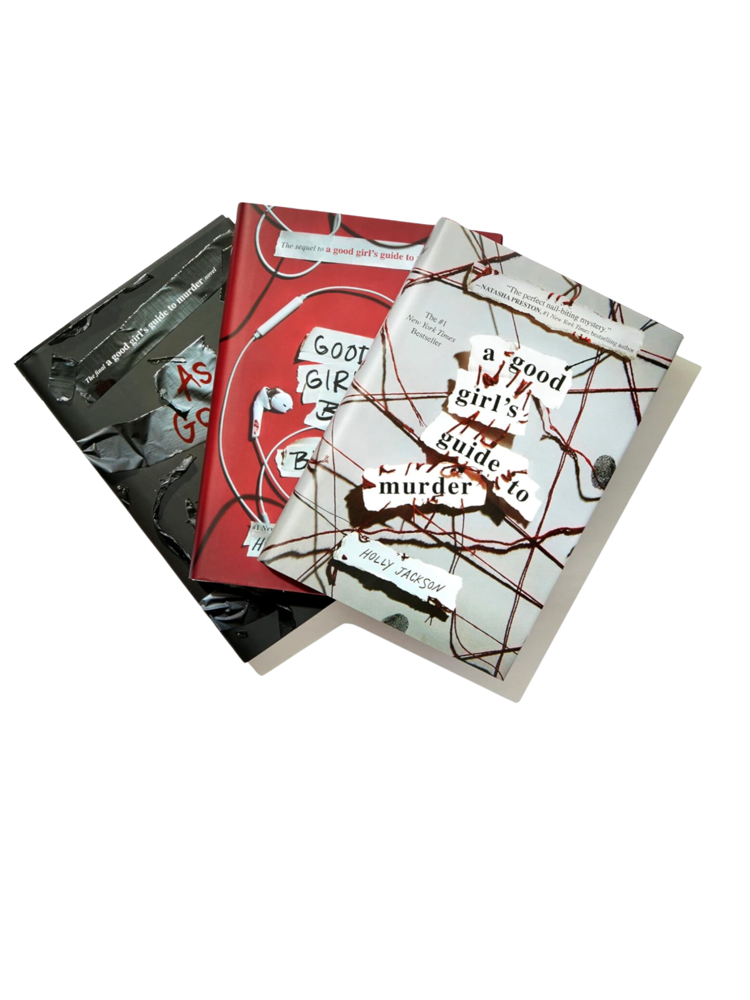

Em's Mystery Book Recommendations
The mystery books I recommend is a triology called A Good Girls Guide to Murder by Holly Jackson. This triology focuses on high school senior Pip. Pip is applying to top-tier colleges and hanging out with her close friends and lovely family when she decides that her senior project will be an investigation into the five-year-old murder of the town sweetheart, Andie, by her boyfriend, Sal, who then killed himself. Something about the whole thing didn’t seem right to Pip, and certainly the racism that it engendered about Sal and his still-present family wasn’t right. But as Pip digs deeper and deeper, ignoring the warnings of her teacher and the concerns of her friends and family, Pip discovers that the town secrets merely begin with the murder-suicide. And when things become increasingly personal for Pip, someone clearly wants her to cease the investigation at once, or else…
